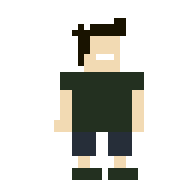

Immersion
The reader is inside the story, not in front of it.
Design Education · Scrollytelling & Parallax
You are inside the demo. Every section below explains a scrollytelling technique while performing it — starting with these treelines, drifting at three different speeds.
What just happened: the three bands of forest above share a single scroll listener
and one requestAnimationFrame loop. The far band keeps ~55% of your scroll, the middle
~35%, the nearest almost none — and that speed difference alone is what your eye reads as depth.
Chapter One
Scrollytelling is scroll-driven narrative: instead of clicking through pages, the visitor’s own scrolling advances a story — pinning visuals, triggering animations, and revealing text in a directed sequence. The technique went mainstream in 2012 with The New York Times’ “Snow Fall,” a multimedia feature about an avalanche that wove video, maps, and animation into the act of reading, and it has since become the signature format of editorial features, product launches, and annual reports.
Its favorite tool, parallax, is much older. In the 1930s, animators built multiplane cameras that photographed artwork on stacked glass panes, sliding the background panes slower than the foreground to fake depth. Side-scrolling arcade games like Moon Patrol (1982) brought the same trick to screens, and around 2011 web designers began binding it to the scrollbar: layers that move at different fractions of scroll speed read instantly as near and far.
The strengths are immersion and pacing — the author controls exactly when each idea arrives,
and the reader feels like a participant rather than an audience. The pitfalls are just as real:
heavy scroll effects can cause motion sickness, janky pages, and broken mobile experiences if
they fight the browser instead of working with it. The craft rules: animate only
transform and opacity, keep one listener feeding one animation frame,
respect prefers-reduced-motion, and reach for the technique when you have an actual
story to pace — not as decoration on a settings page.
Scrolling is the one gesture every visitor already knows. Scrollytelling just gives it a plot.
Interactive · 01
Depth is nothing but a speed difference. Drag the camera through this little world, then change how much of the camera’s motion each layer inherits. Set all three sliders equal and the depth illusion dies instantly — set the back layer slow and the front fast, and the forest snaps into 3D.
Each layer simply does translateX(−camera × speed). Negative speeds make a
layer move against the camera — disorienting, which is exactly why real parallax
keeps every layer moving the same direction, just by different amounts. This is the multiplane
camera from 1930s animation, rebuilt with three CSS transforms.
Interactive · 02
This is the classic scrollytelling pattern: a visual sticks to the screen while short text steps scroll past it, and every step that crosses the middle of your viewport changes the scene’s state. Scroll slowly and watch the day pass.
The visual beside (or above) this text is position: sticky. It costs
no JavaScript at all — the browser pins it while these steps scroll by.
An IntersectionObserver watches each step against a thin band in the middle
of your viewport. The moment this paragraph entered that band, it fired once and set
the scene’s state to dusk. No scroll-position math, no constant polling.
Each state is just a data-phase attribute; CSS transitions handle the sky,
the moon, and the stars. The JavaScript never animates anything — it only
announces which chapter you are in.
Scrollytelling pieces chain dozens of these steps into a narrative arc. Scroll back up — the story politely rewinds, because the observer fires in both directions.
Pattern name: the “pinned scene + stepper.” It powered “Snow Fall” and nearly every data-journalism feature since. The reader’s scroll becomes the “next” button — pacing without ever taking control away.
Interactive · 03
When content enters the viewport, how it appears is a pacing decision. Flip the switch, then hit replay and feel the difference.
The reader is inside the story, not in front of it.
Ideas arrive one beat at a time, in author order.
Speed differences turn flat layers into space.
Transform & opacity only — the GPU does the rest.
Motion serves the story, never the other way around.
Reduced-motion users get the content, minus the ride.
Staggered: each card waits ~90 ms longer than the last, so your eye is led left-to-right through the list — the page is quietly deciding your reading order for you.
Air&Ember’s own showcase is a full scrollytelling build — pinned scenes, parallax forest and all, at production scale.
See it at full scale →